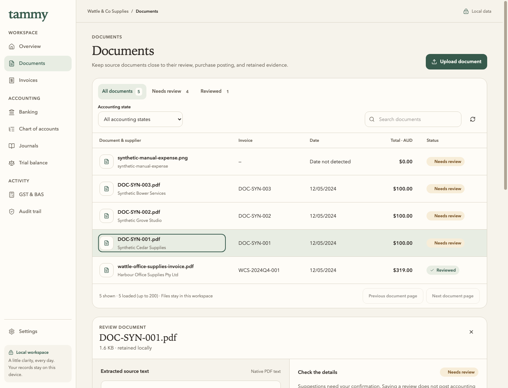
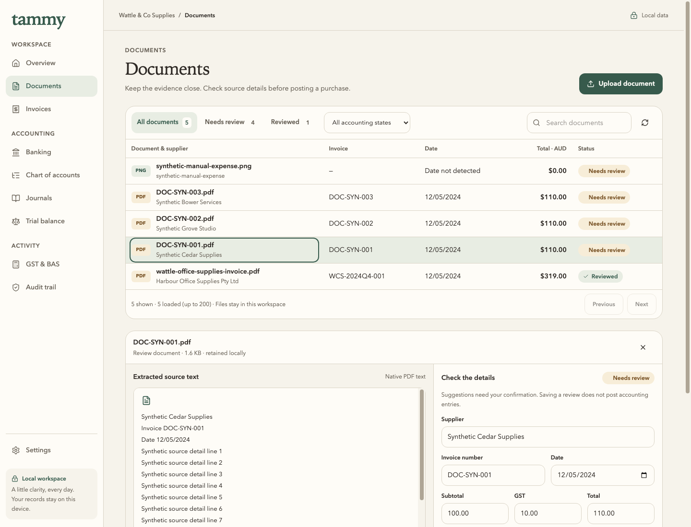
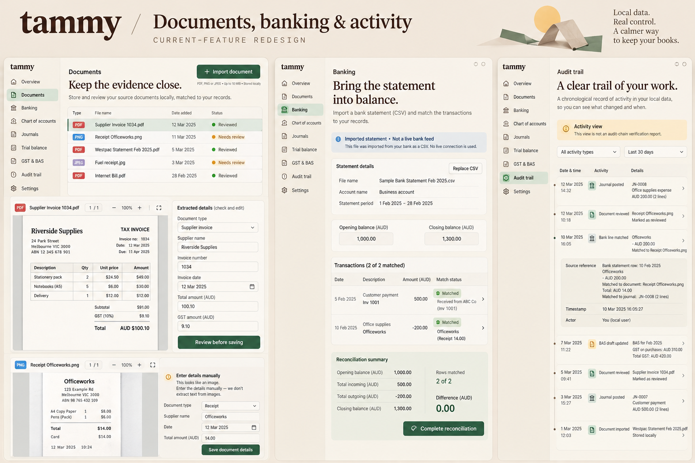
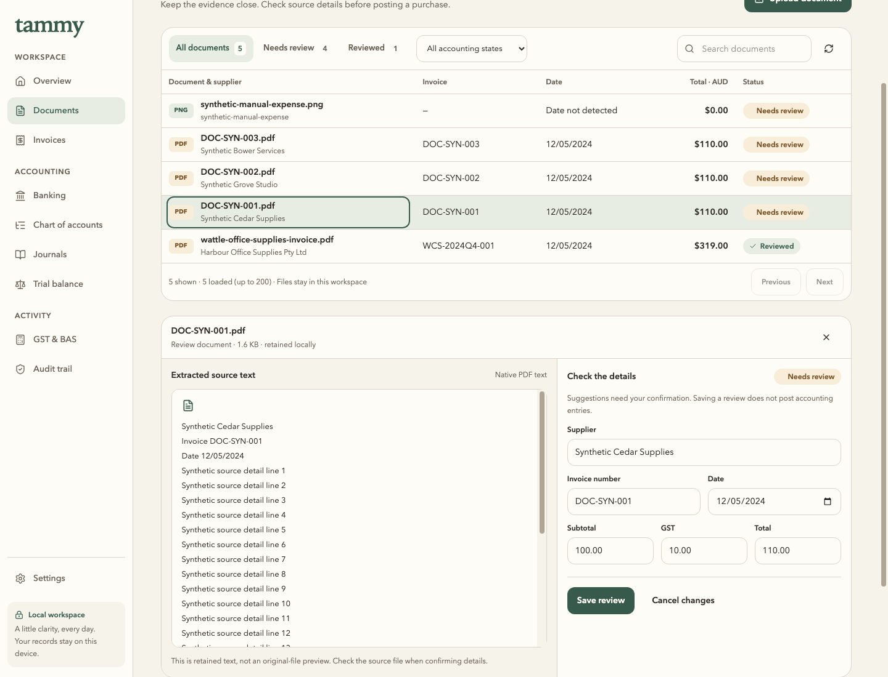
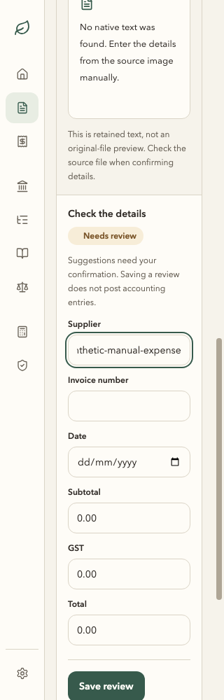

Real Electron renders, isolated synthetic records, matched 1440 × 1100 desktop viewports. The approved board is a generated concept and is labelled separately. Journey, provenance, tests and limits.



The app retains source text and does not provide the concept's original-file preview, page/zoom controls or document-type selector. The explicit limitation and separate purchase-posting controls remain. The baseline Total suggestion incorrectly reads Subtotal; the after view uses whole-word matching, without automatically confirming or posting anything.

